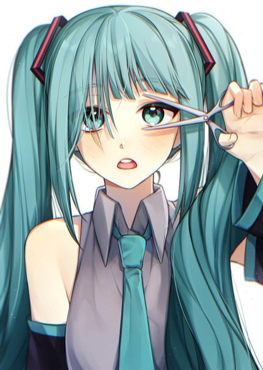
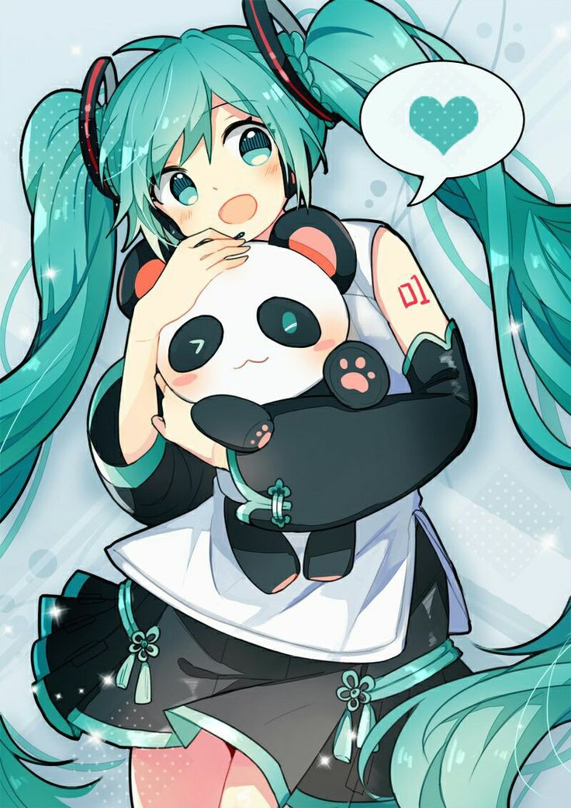
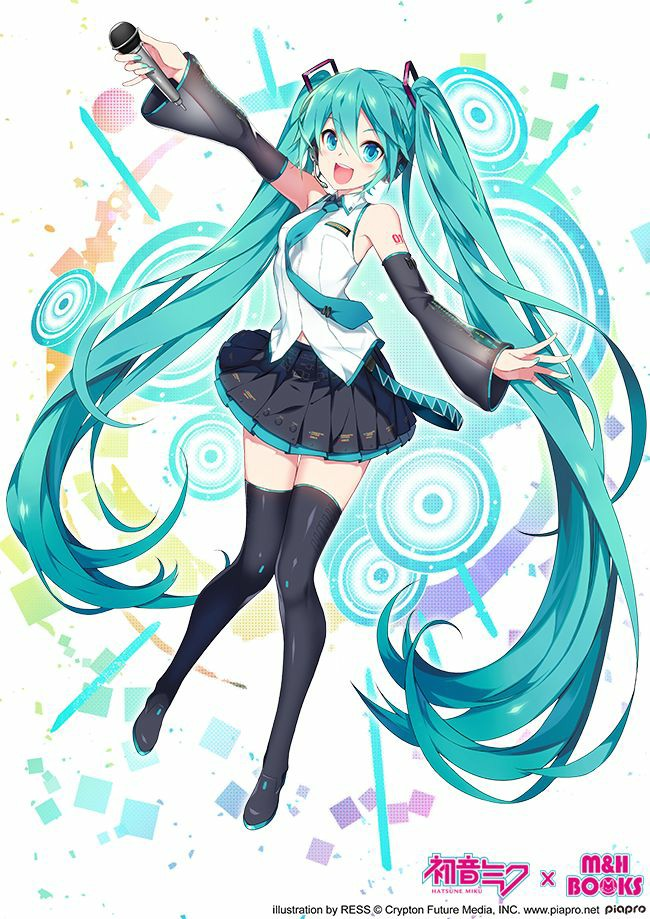
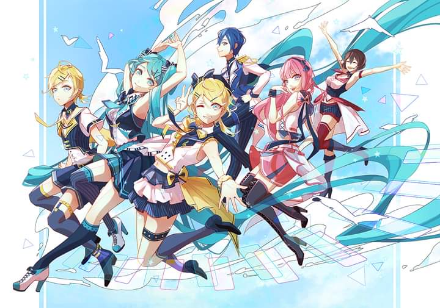
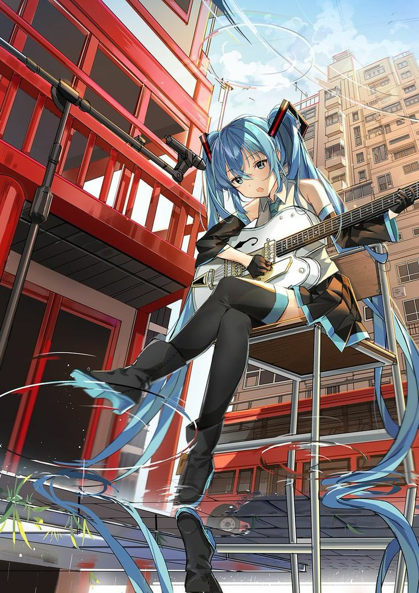

- Origens e Desenvolvimento


Hatsune Miku foi desenvolvida pela Crypton Future Media, uma empresa japonesa de tecnologia de áudio. Ela faz parte da série de software Vocaloid, que permite aos usuários criar músicas usando vozes sintetizadas. Sua voz foi criada a partir de amostras vocais da dubladora japonesa Saki Fujita.
- Visual Iconic
Além de sua voz, Hatsune Miku é conhecida por seu visual distinto. Ela tem cabelos longos e azuis, geralmente presos em dois rabos de cavalo, e usa um traje futurista com gravata de borboleta. Seu design foi criado por KEI, um ilustrador japonês.
- Popularidade Global
 Hatsune Miku ganhou imensa popularidade não apenas no Japão, mas também internacionalmente. Ela se tornou uma das figuras mais reconhecíveis da cultura pop japonesa e é frequentemente vista em convenções de anime e eventos de música.
- Música e Concertos
 Muitos produtores musicais e artistas ao redor do mundo usam a voz de Hatsune Miku para criar músicas de diversos gêneros. Ela se tornou um fenômeno na música eletrônica e no J-Pop. Além disso, Hatsune Miku realiza concertos ao vivo, onde sua imagem é projetada em uma tela holográfica e ela "canta" as músicas. Esses concertos costumam atrair grandes multidões e fãs entusiastas.
- Fandom Ativo
 A comunidade de fãs de Hatsune Miku é muito ativa e criativa. Os fãs produzem uma quantidade incrível de arte, músicas, vídeos e até mesmo jogos baseados na personagem. Essa comunidade é conhecida por sua paixão e dedicação.
- Impacto Cultural
 Hatsune Miku representa uma fusão única entre música, tecnologia e cultura pop. Ela demonstra como a tecnologia pode ser usada para criar entretenimento inovador e interativo. Além disso, ela desafia as noções tradicionais de celebridades musicais, pois é uma personagem virtual que se tornou uma estrela real.
Em resumo, Hatsune Miku é uma figura icônica na cultura pop japonesa e uma das mais famosas Vocaloids. Ela influenciou a música e a cultura de maneiras profundas e continua a ser uma presença importante na cena musical global.